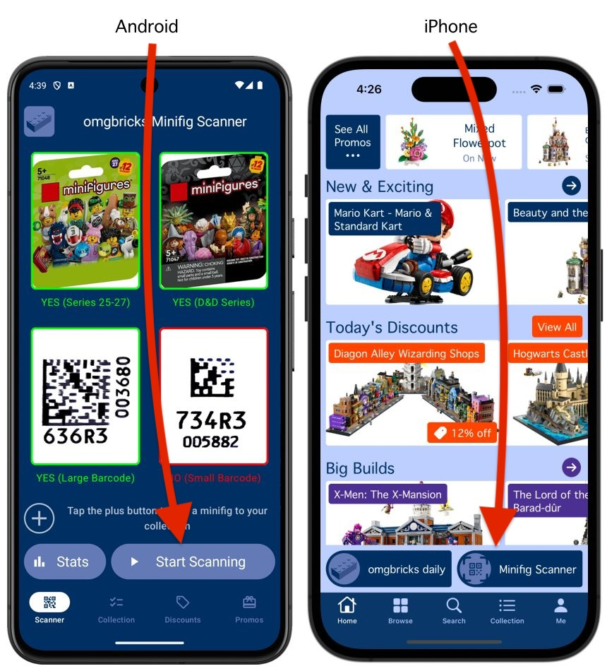
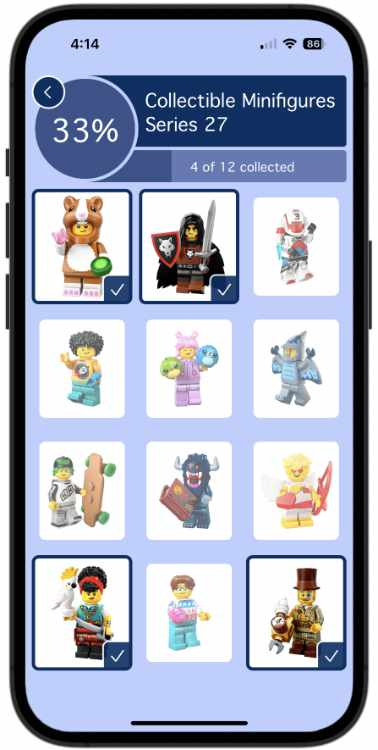

omgbricks Minifig Scanner instantly reveals what's inside LEGO Collectible Minifigure blind boxes! Scan multiple boxes at the same time to quickly and easily find the exact minifigures you're looking for! Let's take a look at how to scan LEGO minifigures using omgbricks.
omgbricks Minifig Scanner
How to scan LEGO minifigures faster & easier.

The Ultimate LEGO Minifigure Scanner
Open the omgbricks Minifigure Scanner
Launch the omgbricks app and start the Minifigure Scanner.
iOS: Launch the omgbricks app, and tap the Minifig Scanner button in the bottom right. Allow the app to use your device camera.
Android: Launch the omgbricks app, and allow the app to use your device camera. Tap the Start Scanning button in the bottom right.
Locate the Barcode on the Box
Look on the bottom of collectible minifigure boxes (series 27, 26, 25 and Dungeons & Dragons) and you'll find 2 codes: A traditional barcode, and a square 2D barcode which resembles a QR code. The square 2D code is the one to scan using the omgbricks Minifigure Scanner and reveal which minifigure is inside.
Focus on the Square Barcode
Now that you've found the 2D square barcode on the box, hold the box about 6 inches / 15 cm in front of your phone's camera. Hold the box and your phone as steady as you can to allow your phone's camera to automatically focus on the barcode. You may need to position the box slightly closer, or slightly further away, depending on your phone's camera and lighting conditions. When the barcode is in focus, an image will appear over it to tell you which LEGO minifigure is inside!
Scan Multiple Boxes at Once
With omgbricks, you don't have to slowly scan one box at a time. You can identify multiple boxes at once to more quickly find the exact minifigures you're looking for. Try stacking the boxes on a shelf or table, and slowly moving your camera across them to identify an entire case in seconds!
Track Your Collected Minifigures
While scanning, a plus button (+) will appear beside the minifigure image. You can tap this plus button to add the minifigure to your collection and easily keep track of which ones you have already found!
Track Scanning Stats
omgbricks automatically keeps count of all the minifigures you've scanned. You'll know exactly how many scans it took to find that elusive minifigure you've been looking for!

Start Scanning Now
omgbricks scans and identifies an unlimited number of minifigures for free. Get started today.
Contact Us
Questions? Comments? Feature Requests? We would love to hear from you.
© omgbricks Ltd. All rights reserved. Design: HTML5 UP.